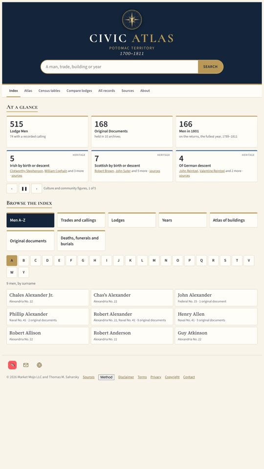
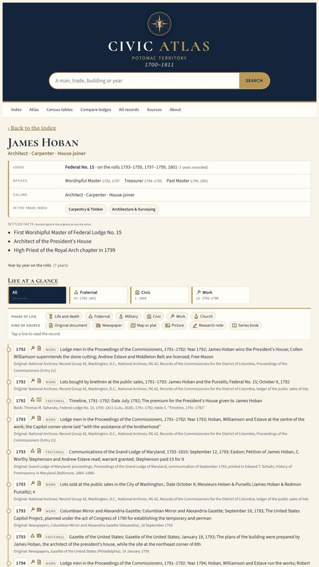
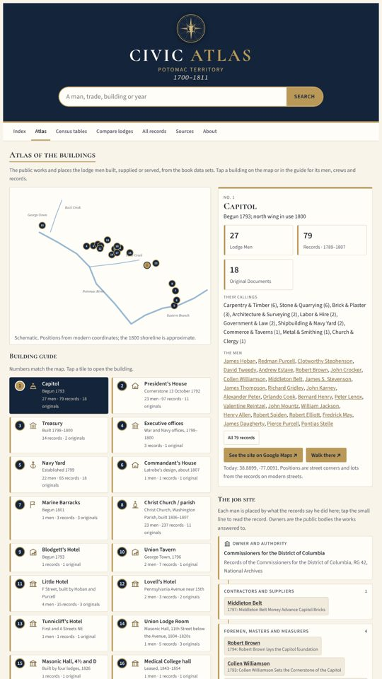
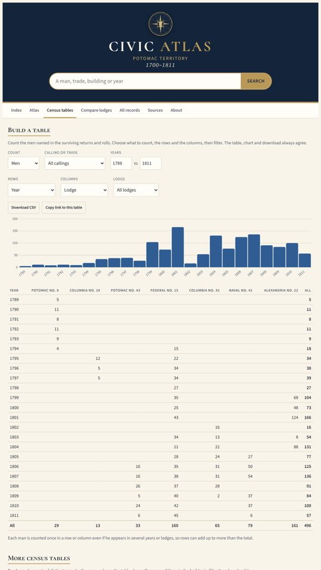

What members get
Every man and lodge
Each man's card joins his lodge returns, the commissioners' records, the parish, the newspapers and the books.
The Atlas
The public works and halls on the city plan, with the crews, payrolls and records behind each building.
Census tables
Build tables of men by calling, lodge, place and year, and download them as CSV.
Every record cited
A full note for each record, naming the source and where the original is held.
Private and secure
Two-step sign-in, and we keep only your email. Card and bank details never reach us.
Inside the app



